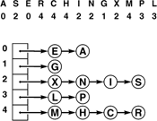
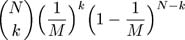
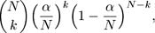
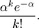
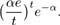
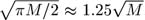

C++ Programming Robert Sedgewick - Princeton University Addison Wesley Professional Algorithms in C++, Parts 1–4: Fundamentals, Data Structure, Sorting, Searching, Third Edition
14.2. Separate Chaining
The hash functions discussed in Section 14.1 convert keys into table addresses; the second component of a hashing algorithm is to decide how to handle the case when two keys hash to the same address. The most straightforward method is to build, for each table address, a linked list of the items whose keys hash to that address. This approach leads directly to the generalization of elementary list search (see Chapter 12) that is given in Program 14.3. Rather than maintaining a single list, we maintain M lists.
This method is traditionally called separate chaining, because items that collide are chained together in separate linked lists. An example is depicted in Figure 14.6. As with elementary sequential search, we can choose to keep the lists in sorted order, or we can leave them unordered. The same basic tradeoffs as those discussed in Section 12.3 apply, but, for separate chaining, the time savings are less significant (because the lists are short) and the space usage is more significant (because there are so many lists).
This diagram shows the result of inserting the keys A S E R C H I N G X M P L into an initially empty hash table with separate chaining (unordered lists), using the hash values given at the top. The A goes into list 0, then the S goes into list 2, then the E goes into list 0 (at the front, to keep the insertion time constant), then the R goes into list 4, and so forth.

We might be using a header node to streamline the code for insertion into an ordered list, but we might not want to use M header nodes for individual lists in separate chaining. Indeed, we could even eliminate the M links to the lists by having the first nodes in the lists comprise the table (see Exercise 14.20).
Program 14.3. Hashing with separate chaining|
This symbol-table implementation is based on replacing the ST constructor, search, and insert functions in the linked-list–based symbol table of Program 12.6 with the functions given here, and replacing the link head with an array of links heads. We use the same recursive list search and deletion procedures as in Program 12.6, but we maintain M lists, with head links in heads, using a hash function to choose among the lists. The constructor sets M such that we expect the lists to have about five items each; therefore the other operations require just a few probes.
private:
link* heads;
int N, M;
public:
ST(int maxN)
{
N = 0; M = maxN/5;
heads = new link[M];
for (int i = 0; i < M; i++) heads[i] = 0;
}
Item search(Key v)
{ return searchR(heads[hash(v, M)], v); }
void insert(Item item)
{ int i = hash(item.key(), M);
heads[i] = new node(item, heads[i]); N++; }
|
For a search miss, we can assume that the hash function scrambles the key values sufficiently well that each of the M lists is equally likely to be searched. Then the performance characteristics that we studied in Section 12.3 apply, for each list.
Property 14.1. Separate chaining reduces the number of comparisons for sequential search by a factor of M (on the average), using extra space for M links|
The average length of the lists is N/M. As described in Chapter 12, successful searches are expected to go about halfway down some list. Unsuccessful searches go to the end of a list if the lists are unordered, halfway down a list if the lists are kept in order.
|
Most often, we use unordered lists for separate chaining, because that approach is both easy to implement and efficient: insert takes constant time and search takes time proportional to N/M. If huge numbers of search misses are expected, we can speed up the misses by a factor of 2 by keeping the lists ordered, at the cost of a slower insert.
As stated, Property 14.1 is a trivial result, because the average length of the lists is N/M, no matter how the items are distributed among the lists. For example, suppose that all the items fall onto the first list. Then, the average length of the lists is (N+0+0+. . .+0)/M = N/M. The real reason that hashing is useful in practice is that each list is extremely likely to have about N/M items.
Property 14.2. In a separate-chaining hash table with M lists and N keys, the probability that the number of keys in each list is within a small constant factor of N/M is extremely close to 1|
We briefly consider this classical analysis, for readers who are familiar with basic probabilistic analysis. The probability that a given list will have k items on it is

by an elementary argument. We choose k out of the N items: Those k items hash to the given list with probability 1/M, and the other N – k items do not hash to the given list with probability 1 – (1/M). In terms of α= N/M, we can rewrite this expression as

which, by the classical Poisson approximation, is less than

From this result, it follows that the probability that a list has more than tα items on it is less than

This probability is extremely small for practical ranges of the parameters. For example, if the average length of the lists is 20, the probability that we will hash to some list with more than 40 items on it is less than (40e/2)2e-20 0.0000016. 0.0000016.
|
The foregoing analysis is an example of a classical occupancy problem, where we consider N balls thrown randomly into one of M urns, and analyze how the balls are distributed among the urns. Classical mathematical analysis of these problems tells us many other interesting facts that are relevant to the study of hashing algorithms. For example, the Poisson approximation tells us that the number of empty lists is about e–α. A more interesting result tells us that the average number of items inserted before the first collision occurs is about . This result is the solution to the classical birthday problem. For example, the same analysis tells us, for M = 365, that the average number of people we need to check before finding two with the same birthday is about 24. A second classical result tells us that the average number of items inserted before each list has at least one item is about MHM. This result is the solution to the classical coupon collector problem. For example, the same analysis tells us, for M = 1280, that we would expect to collect 9898 baseball cards (coupons) before getting one for each of 40 players on each of 32 teams in a series. These results are indicative of the properties of hashing that have been analyzed. In practice, they tell us that we can use separate chaining with great confidence, if the hash function produces values that approximate random ones (see reference section).
In a separate-chaining implementation, we typically choose M to be small enough that we are not wasting a huge area of contiguous memory with empty links, but large enough that sequential search is the most efficient method for the lists. Hybrid methods (such as using binary trees instead of linked lists) are probably not worth the trouble. As a rule of thumb, we might choose M to be about one-fifth or one-tenth the number of keys expected be be in the table, so that the lists are expected to contain about five or 10 keys each. One of the virtues of separate chaining is that this decision is not critical: if more keys arrive than expected, then searches will take a little longer than if we had chosen a bigger table size ahead of time; if fewer keys are in the table, then we have extra-fast search with perhaps a small amount of wasted space. When space is not a critical resource, M can be chosen sufficiently large that search time is constant; when space is a critical resource, we still can get a factor of M improvement in performance by choosing M to be as large as we can afford.
The comments in the previous paragraph apply to search time. In practice, unordered lists are normally used for separate chaining, for two primary reasons. First, as we have mentioned, insert is extremely fast: We compute the hash function, allocate memory for the node, and link in the node at the beginning of the appropriate list. In many applications, the memory-allocation step is not needed (because the items inserted into the symbol table may be existing records with available link fields), and we are left with perhaps three or four machine instructions for insert. The second important advantage of using the unordered-list implementation in Program 14.3 is that the lists all function as stacks, so we can easily remove the most recently inserted items, which are at the front of the lists (see Exercise 14.21). This operation is an important one when we are implementing a symbol table with nested scopes, for example in a compiler.
As in several previous implementations, we implicitly give the client a choice for handling duplicate keys. A client like Program 12.11 might search to check for duplicates before any insert, thus ensuring that the table does not contain any duplicate keys. Another client might avoid the cost of this search by leaving duplicates in the table, thus achieving fast insert operations.
Generally, hashing is not appropriate for use in applications where implementations for the sort and select ADT operations are required. However, hashing is often used for the typical situation where we need to use a symbol table with potentially a large number of search, insert, and remove operations, then to print out the items in order of their keys once, at the end. One example of such an application is a symbol table in a compiler; another is a program to remove duplicates, such as Program 12.11. To handle this situation in an unordered-list implementation of separate chaining, we would have to use one of the sorting methods described in Chapters 6 through 10; in an ordered-list implementation, we could accomplish the sort in time proportional to N lg M with list mergesort (see Exercise 14.23).
Exercises |  14.16 How long could it take in the worst case to insert N keys into an initially empty table, using separate chaining with (i) unordered lists and (ii) ordered lists? 14.16 How long could it take in the worst case to insert N keys into an initially empty table, using separate chaining with (i) unordered lists and (ii) ordered lists?
| | | | 14.17 Give the contents of the hash table that results when you insert items with the keys E A S Y Q U T I O N in that order into an initially empty table of M = 5 lists, using separate chaining with unordered lists. Use the hash function 11k mod M to transform the kth letter of the alphabet into a table index. | | 14.18 Answer Exercise 14.17, but use ordered lists. Does your answer depend on the order in which you insert the items? | |  14.19 Write a program that inserts N random integers into a table of size N/100 using separate chaining, then finds the length of the shortest and longest lists, for N = 103, 104, 105, and 106. 14.19 Write a program that inserts N random integers into a table of size N/100 using separate chaining, then finds the length of the shortest and longest lists, for N = 103, 104, 105, and 106.
| | 14.20 Modify Program 14.3 to eliminate the head links by representing the symbol table as an array of nodes (each table entry is the first node in its list). | | 14.21 Modify Program 14.3 to include an integer field for each item that is set to the number of items in the table at the time the item is inserted. Then implement a function that deletes all items for which the field is greater than a given integer N. | | 14.22 Modify the implementation of search in Program 14.3 to show all the items with keys equal to a given key, in the same manner as show. | | 14.23 Develop a symbol-table implementation using separate chaining with ordered lists (with a fixed table of size 97) that includes a destructor, a copy constructor, and an overloaded assignment operator, and supports the construct, count, search, insert, remove, join, select, and sort operations for a first-class symbol-table ADT, with support for client handles (see Exercises 12.6 and 12.7). |
|